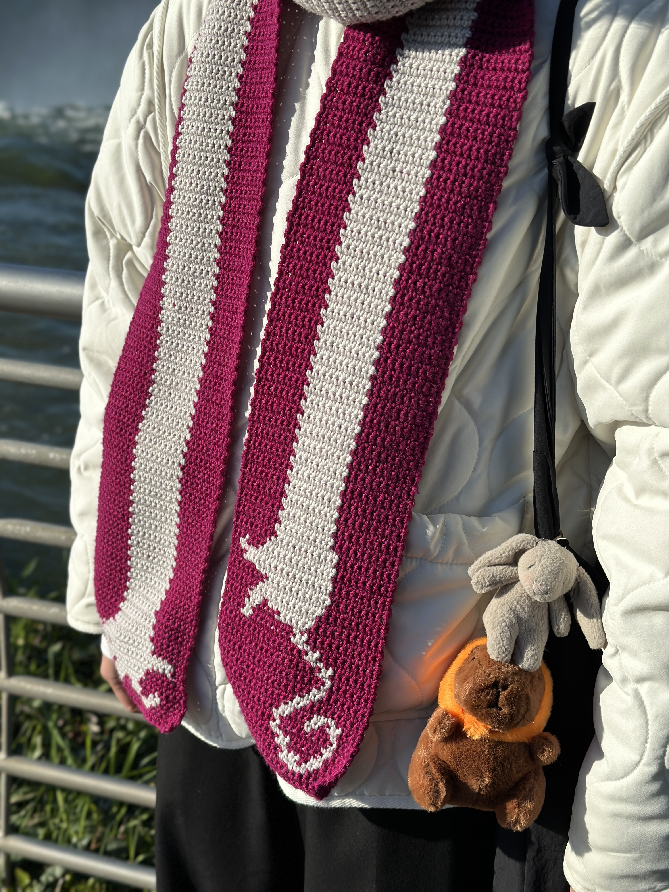
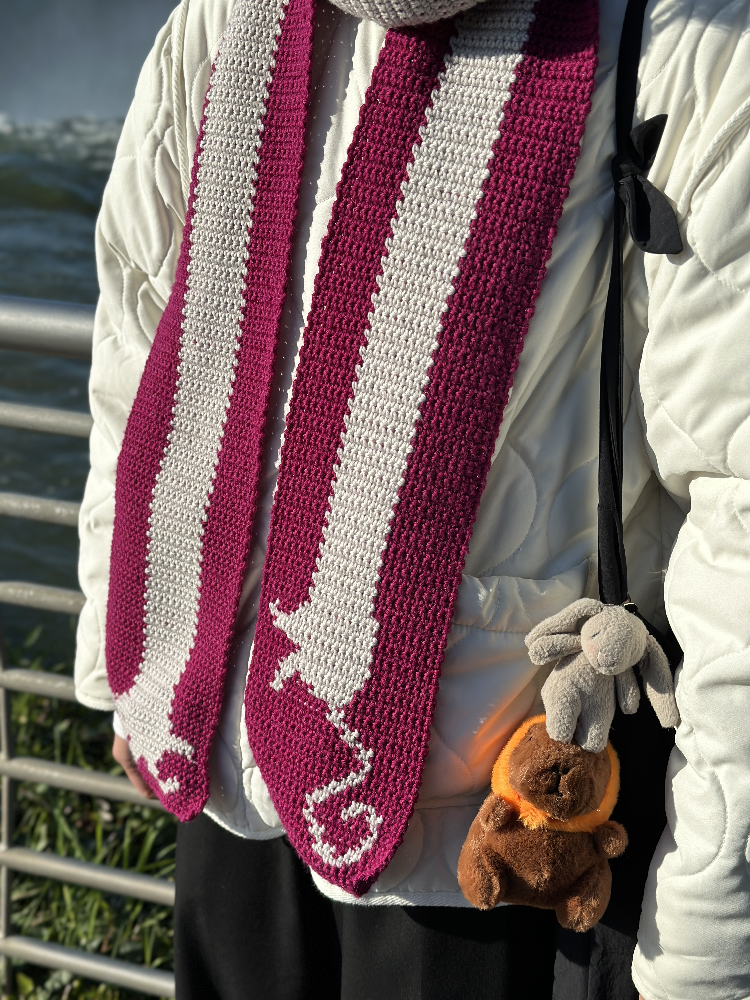
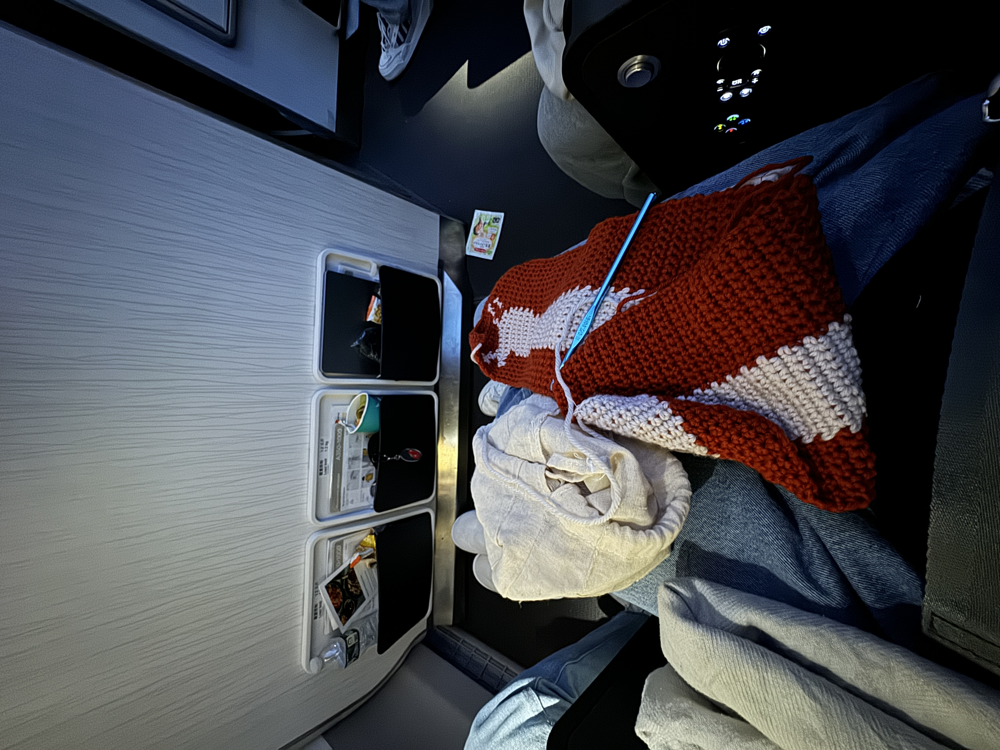
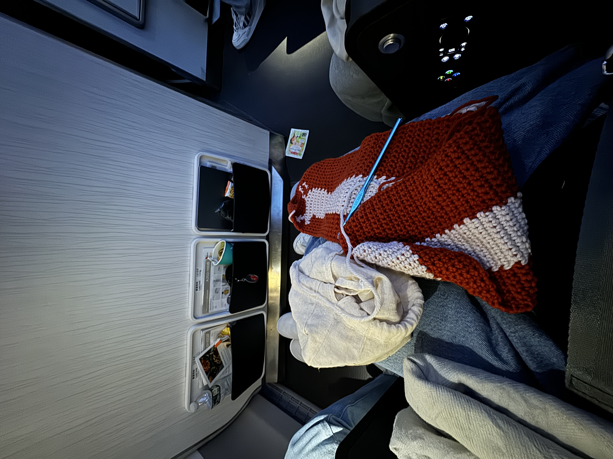
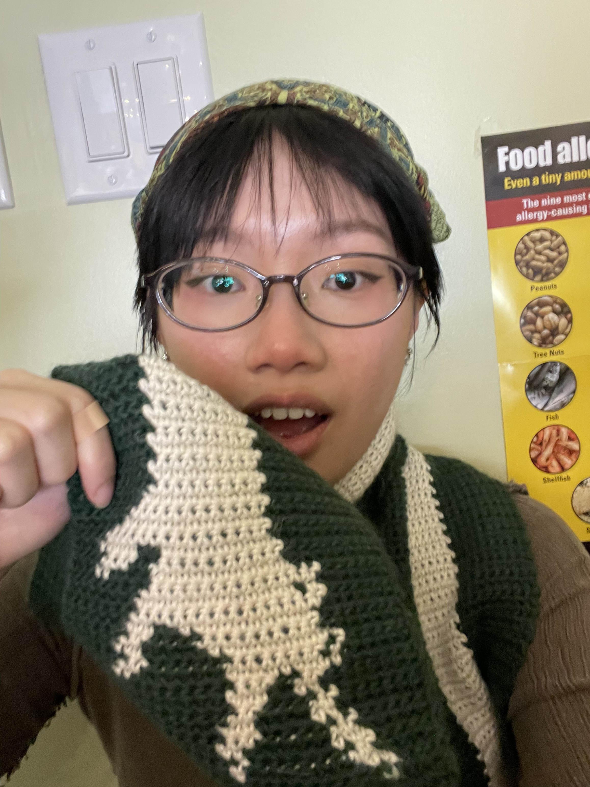
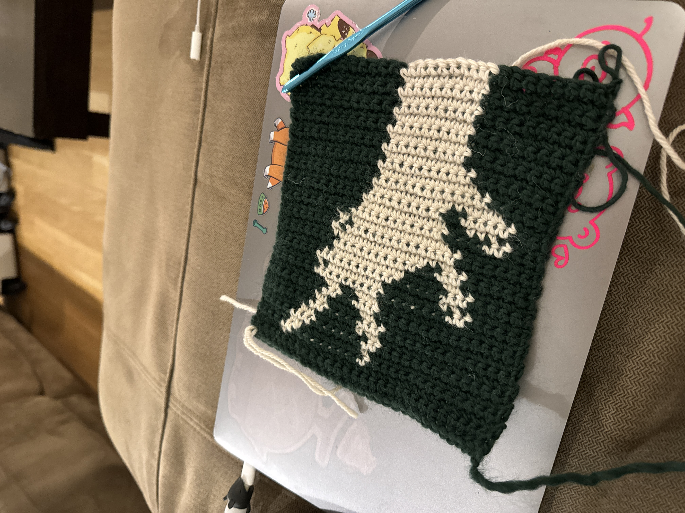
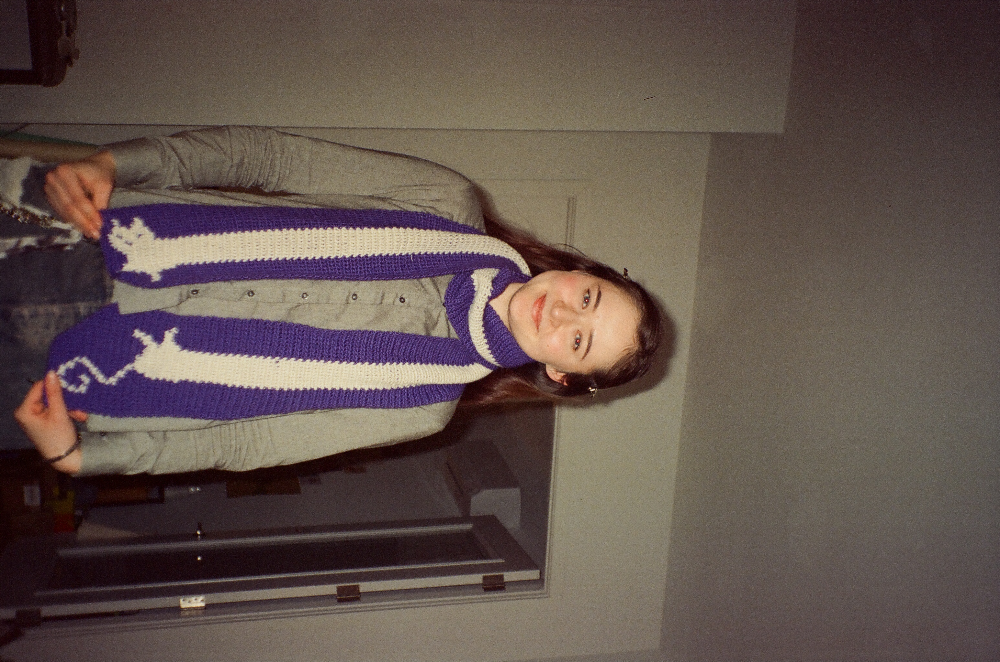

pet scarfves
all pet scarf crochet pattern by @devout_hand, link to pattern found HERE.
 

Corcheted a few different pet scarves for my friend, family, and myself hehe. 🐱 🐶 🐰 🐊
left: hotpink/raspberry kitty cat scarf for myself:
yarn: Cascade 220® (100% Peruvian Highland Wool, medium)


sausage dog (or i call it hotdog) 🐶 scarf for Seewing:
yarn: Cascade 220® (100% Peruvian Highland Wool, medium)
 

croc 🐊 scarf for Anna:
 bunny 🐰 scarf for Mom:
yarn: Lane Mondial Micro Soft (100% High Quality PC Microfibre)

🐇
kitty cat 🐱 scarf for Liia:
